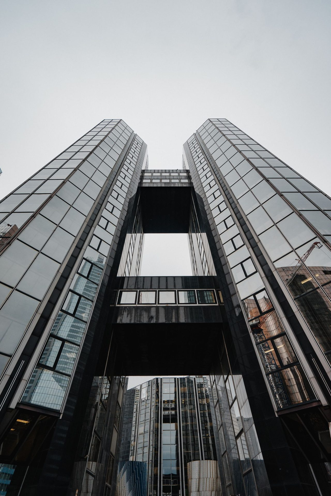

01التنظيف والعناية الداخلية

مساحات نظيفة. تجربة يومية أفضل.
التنظيف والعناية الداخلية
تنظيف دوري وعناية داخلية بالمساحات المشتركة والمكاتب والمرافق، وفق معدّلات الإشغال والاستخدام اليومي.
مساحات مشتركة · عناية داخلية↗
خدماتنا
ثماني خدمات متكاملة للمباني والمعدّات والمساحات التي يعتمد عليها تشغيل منشأتك يوميًا.
اختر خدمتك
نطاق الخدمات
اختر خدمات محدّدة أو ناقش معنا نطاق صيانة متكاملًا لعقارك، أينما كان في لبنان.
مساحات نظيفة. تجربة يومية أفضل.
تنظيف دوري وعناية داخلية بالمساحات المشتركة والمكاتب والمرافق، وفق معدّلات الإشغال والاستخدام اليومي.

عناية بالراحة واستمرارية التشغيل.
فحص أنظمة التدفئة والتهوية والتكييف ومعدّاتها وصيانتها الوقائية وإصلاحها، مع مراعاة حالتها التشغيلية ومتطلّبات المصنّعين.

حافظ على عناصر مبناك.
صيانة عامة للمباني وإصلاحات مدنية لمعالجة التآكل والتدهور والعيوب التي تكشفها الفحوص الميدانية.

تنسيق الحماية وفق احتياجات الموقع.
ترتيبات أمنية تلائم متطلّبات الدخول إلى المنشأة وتشغيلها، بالتنسيق مع جهات أمنية مرخّصة حسب الأصول.

عناية مستمرة بمساحاتك الخارجية.
صيانة دورية للحدائق والمساحات المزروعة، للحفاظ على بيئة خارجية مرتّبة وقابلة للاستخدام في أنحاء المنشأة.

عناية بالبنية التحتية الأساسية.
فحص التمديدات والمعدّات الكهربائية وصيانتها وإصلاحها، ضمن نطاق يتوافق مع أنظمة المنشأة وأولويات صيانتها.

عناية بالأنظمة التي تعمل خلف الكواليس.
صيانة أنظمة المياه والصرف وإصلاحها، ومعالجة التسرّبات والتآكل ومشكلات السباكة اليومية التي تؤثّر في استخدام المنشأة.

عناية مدروسة باحتياجات الموقع الأساسية.
تنسيق صيانة معدّات مكافحة الحريق والسلامة مع المختصّين، وجمع النفايات غير الخطرة عبر جهات مرخّصة.
يُتّفق على نطاق العمل بعد التقييم. وتُنسّق الأنشطة التخصّصية والخاضعة للترخيص مع جهات مؤهّلة أو مرخّصة حسب الأصول، حيثما يلزم.
الصيانة الوقائية والعناية بالأصول
تبدأ الصيانة الجيدة بمعرفة الأصول التي نعتني بها. نجمع بين الفهم الميداني والعناية المجدولة وتوثيق الأعمال المنجزة.
ناقش خطة الصيانة معنا
نفحص المعدّات ونسجّل مواقعها وحالتها ومتطلّبات صيانتها.
نخطّط للمهام وفق إرشادات المصنّعين واحتياجات الأصول وأولويات التشغيل.
نحتفظ بسجلّات الصيانة ونكيّف العناية المستقبلية مع تغيّر المنشأة.
عندما يحدث ما لم تتوقّعه
دعم الصيانة العاجلة متاح على مدار الساعة، طوال أيام الأسبوع. ناقش احتياجات الاستجابة الخاصة بمنشأتك ضمن نطاق الخدمة المتّفق عليه.
لنتحدّث عن منشأتك
يساعد التقييم الأولي للمنشأة على تحديد الخدمات والأولويات المناسبة لعقارك.